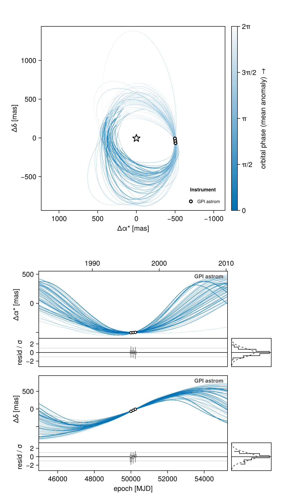
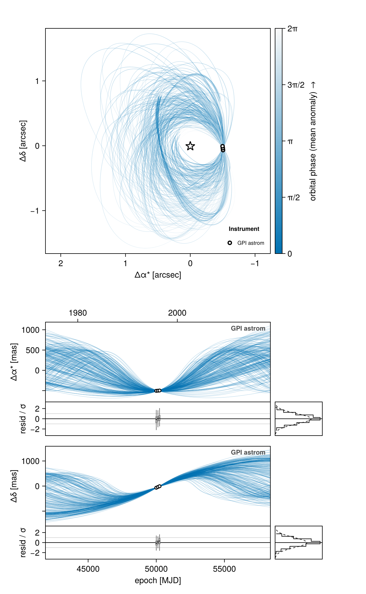
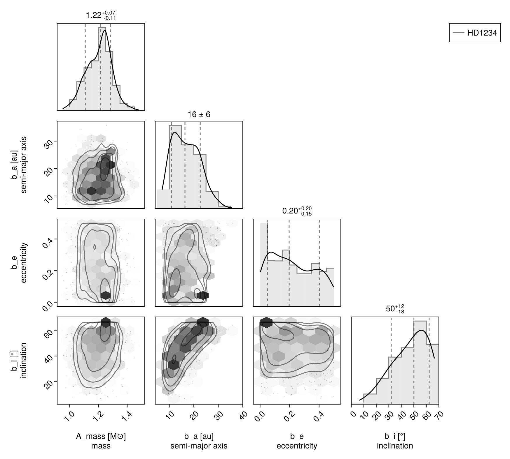

Quick Start
This guide introduces the key concepts in Octofitter:
- Observation objects to hold your data
BodyandSystemmodels to specify variables, priors, and system architecture- Sampling from the posterior using MCMC
- Plotting the results
- Saving the chain
For installation instructions, see Installation.
If you are porting a script written for Octofitter v8 or earlier, read Migrating to Octofitter v9 first — the model syntax changed significantly.
Example: Fit a Single Planet Orbit to Relative Astrometry
Load the required packages:
using Octofitter, Distributions, CairoMakie, PairPlotsAn Octofitter model consists of a list of 0 or more bodies and a list of 0 or more observations. The host star is a body like any other, so define it first:
A = Body(
name="A",
variables=@variables begin
mass ~ truncated(Normal(1.2, 0.1), lower=0.1) # [M⊙]
end
)Now the planet. about=A says the planet orbits the star and the orbital parameters are defined relative to it. The orbital elements and their prior distributions go in their own variables block:
b = Body(
name="b",
about=A,
variables=@variables begin
mass = 0.0 # [M⊙] see the note below
a ~ Uniform(0, 100) # Semi-major axis [AU]
e ~ Uniform(0.0, 0.5) # Eccentricity
i ~ Sine() # Inclination [rad]
ω ~ UniformCircular() # Argument of periastron [rad]
Ω ~ UniformCircular() # Longitude of ascending node [rad]
θ ~ UniformCircular() # Position angle at the reference epoch [rad]
epoch = 50000.0 # The reference epoch for θ [MJD]
end
)Make sure to adjust the epoch 50000.0 above to match your most constraining data epoch. θ and epoch together fix where the planet is on its orbit; you could equally supply tp (epoch of periastron passage) or M0 and epoch.
We are using relative astrometry data here that typically can't constrain the mass of the companion. For this tutorial, we will assume the mass is small compared to the primary and fix it to zero.
Create a RelAstromObs object containing your observational data. In this case it is the position of the planet relative to the star, but many other kinds of data are supported:
astrom_dat = Table(
epoch = [50000.0, 50120.0, 50240.0], # Dates in MJD
ra = [-505.7, -502.5, -498.2], # [mas] East positive
dec = [-66.9, -37.4, -7.9], # [mas] North positive
σ_ra = [10.0, 10.0, 10.0], # [mas] Uncertainties
σ_dec = [10.0, 10.0, 10.0], # [mas] Uncertainties
cor = [0.0, 0.0, 0.0] # RA/Dec correlations
)
# Now build the observation, saying what it observes (`target`) and what body it is measured
# against (`ref`), and assemble the system:
astrom = RelAstromObs(astrom_dat; target=b, ref=A, name="GPI astrom")RelAstromObs "GPI astrom" b vs A
Table with 6 columns and 3 rows:
epoch ra dec σ_ra σ_dec cor
┌─────────────────────────────────────────
1 │ 50000.0 -505.7 -66.9 10.0 10.0 0.0
2 │ 50120.0 -502.5 -37.4 10.0 10.0 0.0
3 │ 50240.0 -498.2 -7.9 10.0 10.0 0.0
Now assemble the system: bodies + observations.
sys = System(
name="HD1234",
bodies=[A, b],
observations=[astrom],
variables=@variables begin
plx ~ truncated(Normal(50.0, 0.02), lower=0.1) # Parallax [mas]
end
)System model HD1234 — 2 bodies, 1 orbits, 1 observations
frame: parallax
plx ~ Truncated(Distributions.Normal{Float64}(μ=50.0, σ=0.02); lower=0.1)
Body A (root)
mass ~ Truncated(Distributions.Normal{Float64}(μ=1.2, σ=0.1); lower=0.1)
Body b about A
a ~ Distributions.Uniform{Float64}(a=0.0, b=100.0)
e ~ Distributions.Uniform{Float64}(a=0.0, b=0.5)
i ~ Sine()
ωx ~ Distributions.Normal{Float64}(μ=0.0, σ=1.0)
ωy ~ Distributions.Normal{Float64}(μ=0.0, σ=1.0)
Ωx ~ Distributions.Normal{Float64}(μ=0.0, σ=1.0)
Ωy ~ Distributions.Normal{Float64}(μ=0.0, σ=1.0)
θx ~ Distributions.Normal{Float64}(μ=0.0, σ=1.0)
θy ~ Distributions.Normal{Float64}(μ=0.0, σ=1.0)
ω = (atan(ωy, ωx) / (2π)) * 6.283185307179586
Ω = (atan(Ωy, Ωx) / (2π)) * 6.283185307179586
θ = (atan(θy, θx) / (2π)) * 6.283185307179586
mass = 0.0
epoch = 50000.0
RelAstromObs "GPI astrom" b vs A
UnitLengthPrior [b]
UnitLengthPrior [b]
UnitLengthPrior [b]
Variables at the System level can be used to define the reference frame. plx is required for relative astrometry. You can also add pmra, pmdec, ra, dec, rv and ref_epoch to specify the full 3D motion of the system's barycentre through space, relative to our solar system. See System Construction for more info.
Now compile the model into efficient sampling code:
model = Octofitter.LogDensityModel(sys)LogDensityModel for System HD1234 of dimension 11 and 3 epochs with fields .ℓπcallback and .∇ℓπcallback
Initialize the starting points for the chains. You can optionally provide starting values for particular variables (UniformCircular priors are a special case — see Priors). Body variables are nested under bodies:
init_chain = initialize!(model, (;
plx = 50.001,
bodies = (;
A = (; mass = 1.18),
b = (;
a = 10.0,
e = 0.01,
)
)
))[ Info: Initializing with 4 fixed parameters
┌ Info: Starting values not provided for all parameters! Guessing starting point using global optimization:
│ num_params = 7
└ num_fixed = 4
┌ Warning: Verbosity toggle: unrecognized_stop_reason
│ Unrecognized stop reason: Too many steps (101) without any function evaluations (probably search has converged). Defaulting to ReturnCode.Default.
└ @ OptimizationBase ~/.julia/packages/OptimizationBase/Jfw5O/src/utils.jl:170
┌ Info: Found sample of initial positions
│ logpost_range = (-29.66409985994739, -19.518560841761172)
└ mean_logpost = -22.65648328227116Visualize the starting point (this is a "variational approximation"). You can use this plot to make absolutely sure your data was entered correctly:
octoplot(model, init_chain)
Sample from the posterior using Hamiltonian Monte Carlo (see Samplers for other options):
chain = octofit(model, iterations=1000)Chains MCMC chain (1000×30×1 Array{Float64, 3}):
Iterations = 1:1:1000
Number of chains = 1
Samples per chain = 1000
Wall duration = 1.7 seconds
Compute duration = 1.7 seconds
parameters = plx, A_mass, b_a, b_e, b_i, b_ωx, b_ωy, b_Ωx, b_Ωy, b_θx, b_θy, b_ω, b_Ω, b_θ, b_mass, b_epoch
internals = n_steps, is_accept, acceptance_rate, hamiltonian_energy, hamiltonian_energy_error, max_hamiltonian_energy_error, tree_depth, numerical_error, step_size, nom_step_size, is_adapt, loglike, logprior, logpost, tree_depth, numerical_error
Use `describe(chains)` for summary statistics and quantiles.
Visualize the results with orbit plots and a corner plot:
octoplot(model, chain) # Plot orbits and data
octocorner(model, chain, small=true) # Corner plot of posterior
Save the results to a FITS file (see Loading and Saving Data for other formats):
Octofitter.savechain("output.fits", chain)
chain = Octofitter.loadchain("output.fits"; model)Passing model to loadchain is recommended: it checks that the chain's columns match the model you are about to use it with, instead of silently returning missing for any that don't.
Working with Dates
These helper functions convert dates to and from Modified Julian Days:
mjd("2020-01-01") # Date string to MJD
years2mjd(2020.0) # Decimal year to MJD
mjd2date(50000) # MJD to date1995-10-10T00:00:00Next Steps
See the Tutorials section for complete examples, starting with the Basic Astrometry Fit.